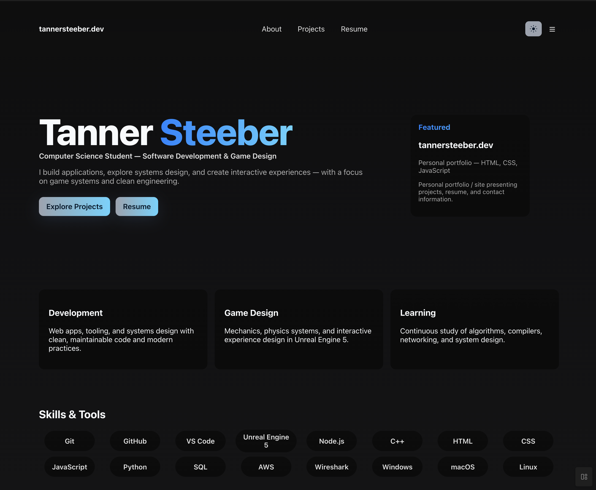
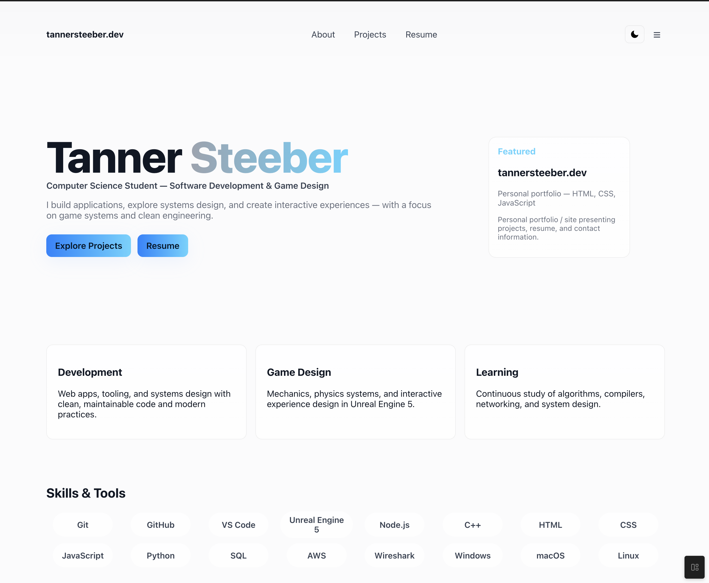
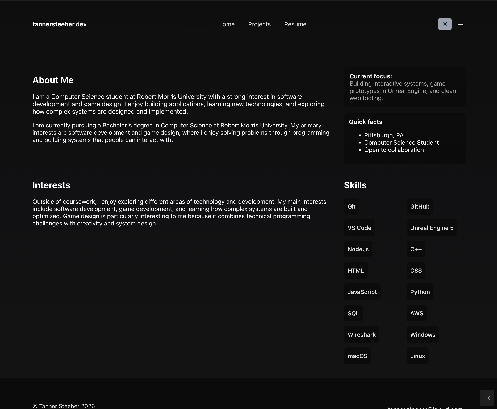
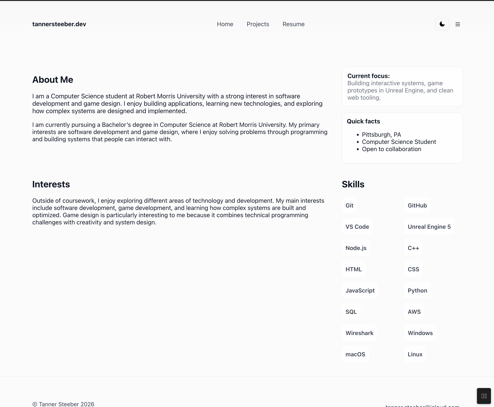
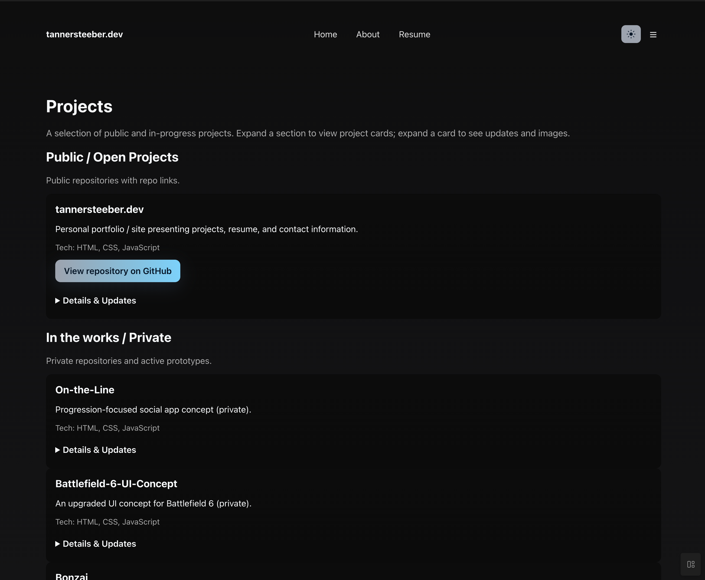
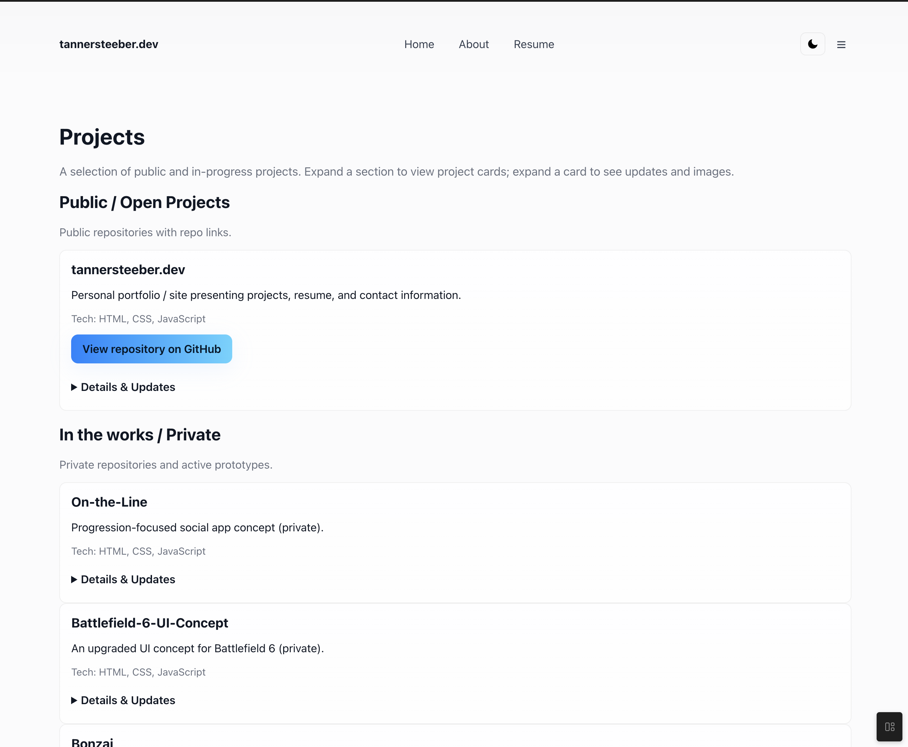
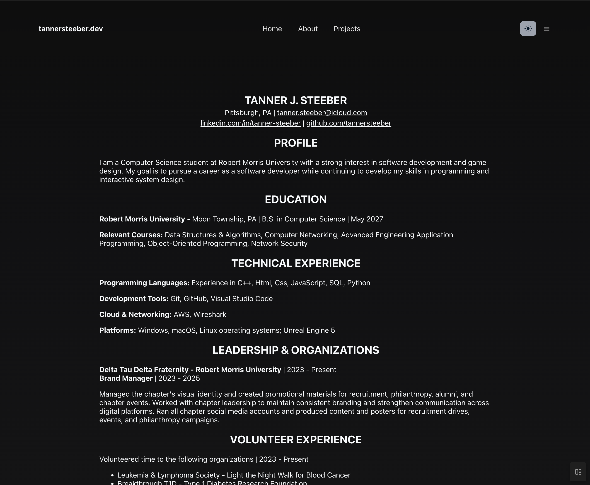
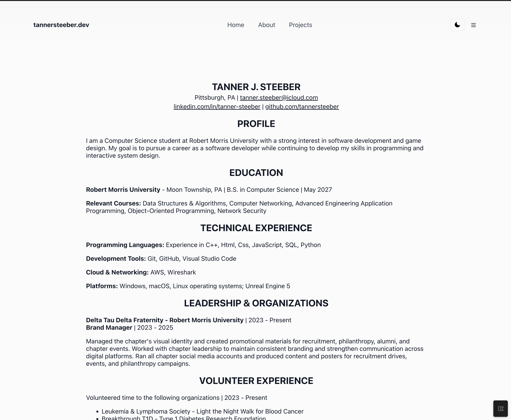

Projects
A selection of public and in-progress projects. Expand a section to view project cards; expand a card to see updates and images.
tannersteeber.dev
Personal portfolio / site presenting projects, resume, and contact information.
Tech: HTML, CSS, JavaScript
View repository on GitHub
Details & Updates
Recent updates
- Version 0.9.2 — early access build.
- Feature - Added a new Hamburger menu with an improved layout and an accessibility button side toggle.
- Version 0.9 — early access build.
- Feature - added images and image preview/control features.
- Version 0.8 — early access build.
- Update - Improved Skills and Tools on the Home and About pages. Added buttons to Repo links and adjusted all layouts.
- Version 0.6 — initial public deployment (first live release of the site).
Screenshots








On-the-Line
Progression-focused social app concept (private).
Tech: HTML, CSS, JavaScript
Details & Updates
Recent updates
- Designing initial API and database schema.
- Prototype UI components in progress.
Battlefield-6-UI-Concept
An upgraded UI concept for Battlefield 6 (private).
Tech: HTML, CSS, JavaScript
Details & Updates
Recent updates
- UI mockups and early prototype elements completed.
Bonzai
Open world car game prototype (private).
Tech: Unreal Engine, C++
Details & Updates
Recent updates
- Physics and driving mechanics prototyped.
Ball-Knowledge
Course project: sports prediction web app prototype where users vote on upcoming games and compete on leaderboards. Built to explore authentication, state management, and scoring logic.
Tech: HTML, CSS, JavaScript
View repository on GitHub
Details & Updates
Recent updates
- Implemented voting UI and initial scoring prototype for class demo.